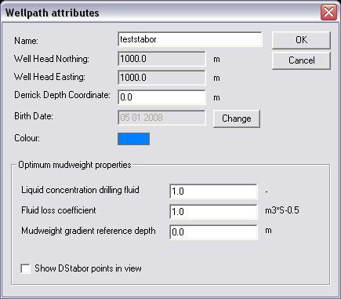

The wellpath attributes dialog appears by right-clicking on a wellpath in the model tree and selecting attributes.
The wellpath attributes provide information about a wellpath:
|
Name |
Name of the wellpath. |
|
Well Head
Northing |
Northing
coordinate of the wellpath position. |
|
Well Head
Easting |
Easting
coordinate of the wellpath |
|
Derrick Depth
coordinate |
Depth coordinate of the top of the well. |
|
Color |
The color of
the wellpath in which it is displayed. The color can be changed by clicking on the
colored square and selecting the desired color. |
|
Optimum
mudweight properties: |
|
|
Liquid
concentration drilling fluid |
Parameter used for enhanced fracture gradient calculations. Is used ONLY for the improved upper limit calculation in Advanced (unlocked) DStabor. The value should range from 1 (only brine or solids that can enter the formation) to 0.4 (40% liquid - 60% solids). |
|
Fluid loss
coefficient |
Parameter used for enhanced fracture gradient calculations. Is used for the improved upper limit calculation (stress caging) in Advanced (unlocked) DStabor. |
|
Mudweight
gradient reference depth |
Rotary Table (or wellhead) Depth coordinate where zero outflow pressure is assumed to calculate a mud gradient from the optimal borehole pressure by dividing the local borehole pressure by the difference in TVD values. Reference Depth should normally be equal to the Derrick Depth. Parameter used for optimum mudweight calculations. |
|
Show DStabor
points in view |
Toggles the
display of DStabor points on and off. The points are displayed when the |
Use insert vertical wellpath to insert a new vertical wellpath.
Use insert deviated wellpath to create a new deviated wellpath.
